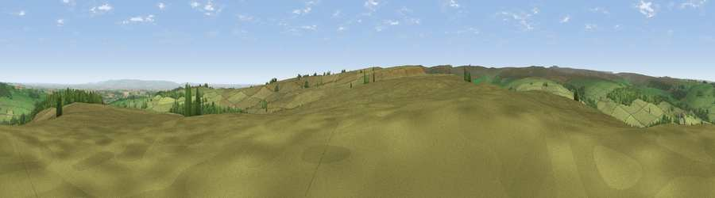

Viewpoint near Swinton
#8566 in England · top 9% of its area beats it · near SwintonWhere it is
The exact computed spot (SE 16775 77788). Click the marker for map links.
The view, rendered

A 360° render of this exact spot computed from the terrain model, tree cover and land cover — summer colours, afternoon light, calibrated against photographs of famous viewpoints. Real trees, hedges and buildings will differ in detail.
The panorama
Grey silhouette: terrain skyline in each direction (720 bearings, Earth curvature and refraction included). Dashed green: skyline with trees (+15 m) and buildings (+8 m) as obstacles. Blue strip: how far the ground is visible on each bearing.
Where the view opens
Wedge length = distance to the farthest visible ground on that bearing (vegetation-aware). Rings at 10, 25 and 50 km.
What fills the view
86% grassland · 9% woodland · 5% cropland
Angular shares of the visible panorama (visual magnitude), not map area. Landscape diversity 0.23 (0–1 Shannon).
Key numbers
More beautiful places nearby
The staircase of upgrades: each row has a higher view potential than everything closer. Driving times are estimates from straight-line distance, calibrated against real road routing — check an actual route before setting out.
| Place | Direction | Drive | Score |
|---|---|---|---|
| Viewpoint near Swinton | E · 4 km | ~9 min | 68.4 |
| Viewpoint near Grewelthorpe | E · 6 km | ~13 min | 73.9 |
| Viewpoint near East Witton | NNW · 8 km | ~16 min | 77.8 |
| Viewpoint near Kirby Knowle | ENE · 30 km | ~47 min | 80.5 |
| Viewpoint near Thirlby | E · 34 km | ~53 min | 81.2 |
| Viewpoint near Thirlby | E · 34 km | ~53 min | 81.5 |
| Beacon Hill | NE · 36 km | ~55 min | 84.7 |
| Carlton Bank | NE · 43 km | ~63 min | 85.1 |
54.19558, -1.74439 · source: screening · position refined by local search. Computed location — check access rights before visiting.